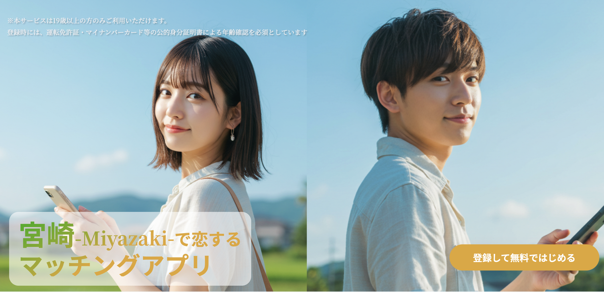
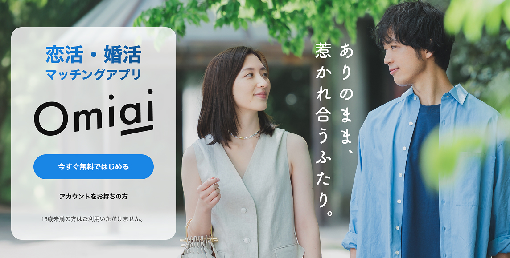

1. 宮崎の40代、恋活・婚活の現実
宮崎県で40代の恋活・婚活は十分にチャンスがあります。
ただし20代の頃と違い、「出会いの場を自分で設計する」ことが重要です。
- 仕事・子育てなどで生活動線が固定化しやすい
- 出会いが自然発生しにくい（職場/知人紹介が減る）
- 逆に言うと、アプリやイベントを“仕組み”として使えば一気に効率が上がる
このページでは、流れに合わせて、宮崎版に置き換えたアプリ選定・支援制度・デートスポット（実在店）までまとめます。
2. 宮崎でおすすめのマッチングアプリ
まずはアプリを整理します。
MyZee（マイジー） - 期待のアプリ（宮崎向け）

| 目的 |
恋活・地域交流 |
| 対象 |
宮崎県内・ローカル志向 |
| 特徴 |
「宮崎で出会う」導線を最初から設計したローカル志向のアプリとして訴求。県内の出会いを前提にコミュニケーションが始めやすい。 |
おすすめポイント
宮崎で“ちゃんと会える”導線を最初から想定した、ローカル志向の期待アプリ。
公式サイト:
MyZee（宮崎向け）→
全国型：出会いの母数を増やす定番
※「どれが絶対」ではなく、目的で使い分けが最短です。
Pairs（ペアーズ）

まず母数を取りに行くならこれ。 40代の会員数も多く、趣味・価値観でつながれるコミュニティ機能が充実しています。
公式サイト:
Pairs（ペアーズ）→
Omiai（オミアイ）

婚活寄りの空気感を好む人に。 真剣度が高く、落ち着いた出会いを求める層が多いのが特徴です。
公式サイト:
Omiai→
youbride（ユーブライド）

結婚を意識した層が多い。 成婚実績も豊富で、40代の婚活には外せない選択肢です。
公式サイト:
youbride→
marrish（マリッシュ）

再婚/子持ち理解の設計がある。 同じ境遇の人と出会いやすく、応援プログラムなども充実しています。
公式サイト:
marrish（マリッシュ）→
使い分けの目安（40代）
- 恋活 → Pairs + MyZee
- 婚活 → Omiai / youbride + MyZee
- 再婚/理解重視 → マリッシュ + MyZee
3. 40代で成果を出すコツ（安全対策含む）
普通にやると負けるポイントを潰してから挑みましょう。
1) プロフィールは「誠実さ×生活感」を両立
- 写真：清潔感（明るい場所、顔が分かる、加工しすぎない）
- 自己紹介：仕事/休日/価値観を短くまとめる
- 条件：最初から絞りすぎない（会う前に決めすぎない）
2) メッセージは“軽い質問”でテンポを作る
- 「休みの日って何してること多いですか？」
- 「宮崎だと、ニシタチ行きます？カフェ派です？」
3) 初回は短時間・人が多い場所
- いきなり夜遅く/個室/遠出は避ける
- カフェ→散歩→解散、が一番安全で失敗しにくい
4) 安全対策
- 投資/副業/LINE誘導が早い人は要注意
- 会う前に個人情報を出しすぎない
- 違和感があればブロック・通報でOK（我慢しない）
4. 宮崎の婚活支援・イベントの探し方
宮崎市の結婚支援（公式）
結婚支援の案内、補助金、関連事業への導線がまとまっています。
宮崎市公式ページ→
宮崎県：みやざき結婚サポートセンター
会員資格や利用手順、県内拠点（宮崎/都城/延岡など）の案内が公式で確認できます。
宮崎県公式ページ→
ひな恋（イベント）
宮崎県のイベント情報を公式で確認できます。
ひな恋
イベント情報→
民間イベント（オミカレ等）
開催頻度が高く、条件検索もしやすいので併用推奨。
※条件や開催状況は必ず公式リンクから最新情報を確認してください。
5. 初デートにおすすめの店・スポット（実在）
宮崎市・都城市を中心に、安心で会話が弾みやすいスポットを厳選しました。
宮崎市：会いやすい・話しやすいカフェ
KITSA
宮崎駅近くで集合しやすい。
食べログで確認
The ROSA COFFEE
橘通エリアで動線が良い。
食べログで確認
6 RACCOON CAFE SOCIETY
落ち着いた雰囲気で会話向き。
食べログで確認
ガレージコーヒー（宮崎市広島）
駅近で短時間デート向き。
食べログで確認
都城市：ドライブ/休日デートの“安全な”選択肢
snow peak cafe 都城
景色・空間で会話がしやすい。
食べログで確認
たなかフルーツ
軽いデートに強い：スイーツ/喫茶。
食べログで確認
夜の雰囲気を使うなら（安全前提）
- ニシタチ（宮崎最大の飲食店街）
- ORIENTAL LOUNGE 宮崎（相席ラウンジ系。好みが合う人のみ）
旅行・休日の鉄板スポット（恋愛の話題づくりに強い）
- 青島神社（縁結びで有名）
- 鵜戸神宮（日南海岸の定番）
- 宮﨑神宮（市内で行きやすい）
- 高千穂（観光協会情報から計画しやすい）
- みやざき臨海公園（サンビーチ一ツ葉：昼デートに強い）
6. よくある質問
- Q. 40代でもアプリで出会えますか？
- A. 出会えます。むしろ「生活が忙しい」ほど、アプリ/イベントの相性が良いです。
- Q. どのアプリが一番いい？
- A. 目的で変わります。恋活なら母数（Pairs）＋地元導線（MyZee）、婚活ならyoubride/Omiaiの併用が無難です。
- Q. 最初のデートはどこが安全？
- A. 宮崎駅周辺〜橘通のカフェ→散歩→解散が鉄板です。夜遅く・個室・遠出は避けましょう。
- Q. 行政の支援って使える？
- A. 宮崎市/宮崎県ともに結婚支援の情報がまとまっているので、公式ページから最新条件を確認して参加するのが確実です。
7. まとめ：まずやること
- MyZee + 全国型1つ（Pairs/Omiai/youbride/マリッシュ）を入れる
- プロフィール写真を整える（明るい・清潔感・盛りすぎない）
- 初回はカフェで短時間（宮崎駅周辺/橘通）
- 余裕があれば、宮崎市/宮崎県の結婚支援イベントも併用
迷ったら、まずは「会うまでのハードルが低い設計」に寄せるのが勝ち筋です。